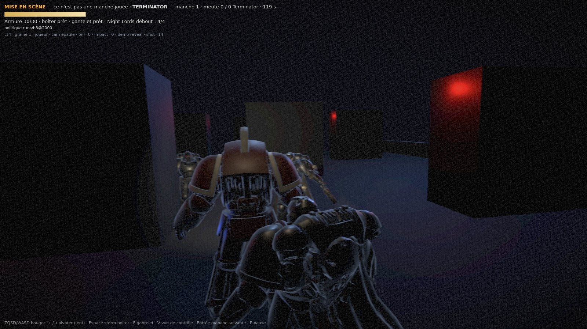
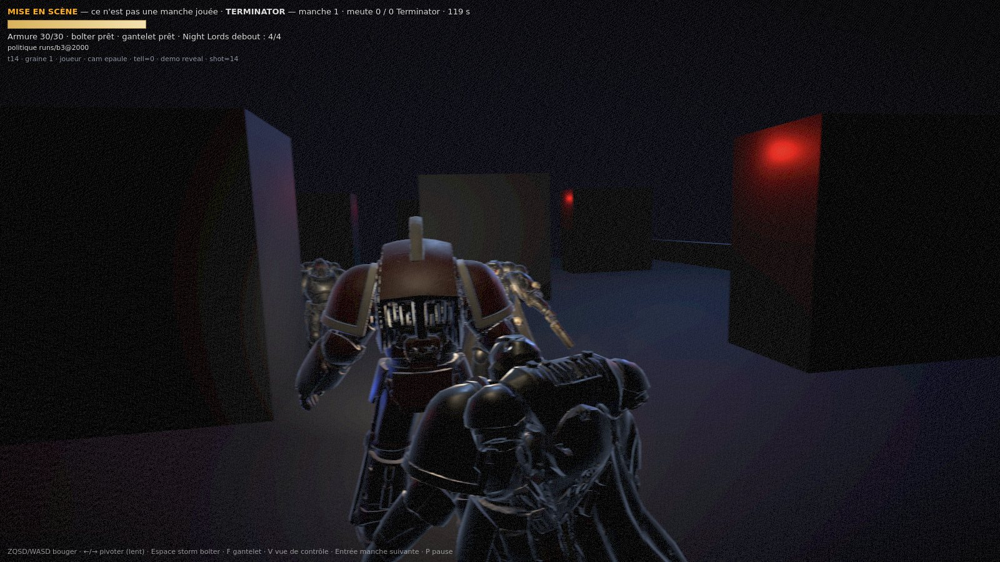
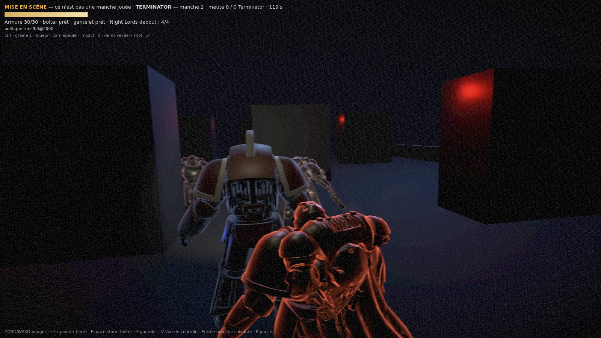
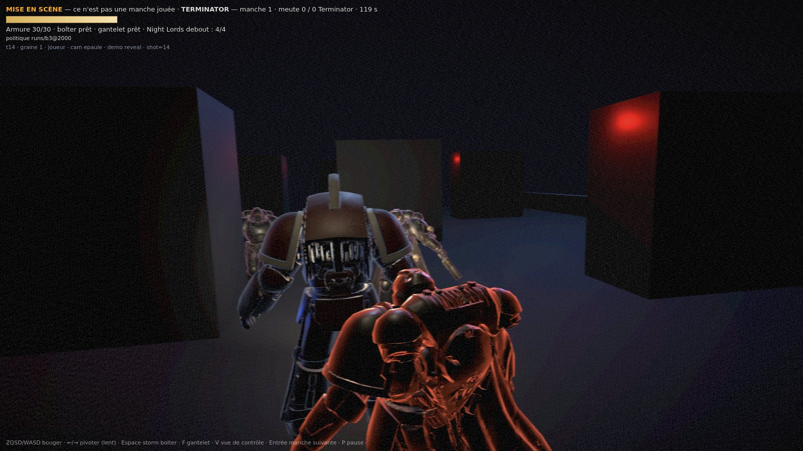

?demo=reveal — le flash et le télégraphe sur la même imageMISE EN SCÈNE — ce n'est pas une manche jouée, le HUD le dit dans l'image. ?shot=14&seed=1, aucun aléa : mêmes entrées, même image, pas de graine à chercher. Tick, graine et mode brûlés dans l'image.
Le frère du flanc arme sa griffe au tick 13 (armTicks = 2, décidé par la simulation), la rafale part au même tick : à l'image armTicks = 1 et le flash est à 75 % de sa course.

?tell=0&impact=0. Deux masses noires au contact, la salle est un trou.


| blocs de 8 px, image entière | écart moyen | blocs > 2 | blocs > 8 | blocs > 16 | max |
|---|---|---|---|---|---|
| flash | 1,92/255 | 31,2 % | 7,4 % | 1,2 % | +70,6 |
| télégraphe | 0,63/255 | 12,0 % | 3,4 % | 0,9 % | +30,8 |
| plancher de grain (même URL deux fois) | 0,00/255 | 5,4 % | 0,0 % | 0,0 % | +5,7 |
Le seuil qui compte est > 8 : le grain n'y passe jamais. La colonne « max » est là pour être lue à côté du grain — un maximum isolé n'est pas une mesure.